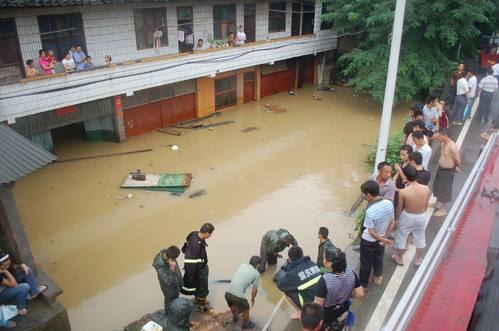

防暴雨自救措施
暴雨来得快，雨势猛，尤其是大范围持续性暴雨和集中的特大暴雨，它不仅影响工农业生产，而且可能危害人民的生命，造成严重的经济损失。
暴雨的危害主要有两种：⑴ 渍涝危害。 由于暴雨急而大，排水不畅易引起积水成涝，土壤孔隙被水充满，造成陆生植物根系缺氧，使根系生理活动受到抑制，加强了嫌气过程，产生有毒物质，使作物受害而减产。⑵ 洪涝灾害。 由暴雨引起的洪涝淹没作物，使作物新陈代谢难以正常进行而发生各种伤害，淹水越深，淹没时间越长，危害越严重。特大暴雨引起的山洪暴发、河流泛滥，不仅危害农作物、果树、林业和渔业，而且还冲毁农舍和工农业设施，甚至造成人畜伤亡，经济损失严重。
步骤/方法
1.受到洪水威胁，如果时间充裕，应按照预定路线，有组织地向山坡、高地等处转移；在措手不及，已经受到洪水包围的情况下，要尽可能利用船只、木排、门板、木床等，做水上转移。
2.洪水来得太快，已经来不及转移时，要立即爬上屋顶、楼房高屋、大树、高墙，做暂时避险，等待援救。不要单身游水转移。
3.在山区，如果连降大雨，用容易暴发山洪。遇到这种情况，应该注意避免渡河，以防止被山洪冲走，还要注意防止山体滑坡、滚石、泥石流的伤害。
4.发现高压线铁塔倾倒、电线低垂或断折；要远离避险，不可触摸或接近，防止触电。
5.洪水过后，要服用预防流行病的药物，做好卫生防疫工作，避免发生传染病。
注意事项
下雨是一种常见的天气现象，但持续下暴雨、甚至下特大暴雨就是一种自然灾害了！学生日常生活中务必要加强防范暴雨。只要大家有充分的安全意识，在雷雨天注意预防、注意水位的涨势并及时采取措施，就能化危险为安全。
|